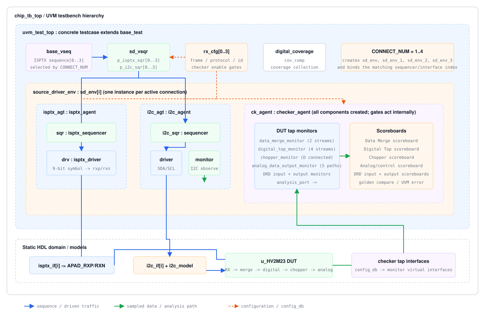

组件与源码证据
| 组件 | 实际职责 | 源码 |
|---|---|---|
| base_test | 按 CONNECT_NUM 创建1到4个 source_driver_env，并连接 virtual sequencer 到各 ISPTX/I2C sequencer。 | top/tb/base_test.sv |
| source_driver_env | 创建 isptx_agent、i2c_agent、checker_agent 和 env_cfg；向 monitor 分发 interface。 | top/agents/isprx_env/env.sv |
| base_vseq | 使用 fork 启动与 CONNECT_NUM 对应的 sequence；但 2/3 路分支后会继续命中最后一个 if-else 的 else，按源码还会启动一次默认 sequence。 | top/vseq/base_vseq.sv |
| chip_tb_top | 实例化4组 ISPTX/I2C interface，并通过 config_db 绑定到对应 env。 | top/tb/chip_tb_top.sv |
| checker_agent | 集中创建并连接 Data Merge、Digital Top、Chopper、Analog、DRD input/output monitor 和 scoreboard。 | top/agents/isprx_env/checker_env/checker_agent.sv |
三个数量参数：
CONNECT_NUM 控制 env、interface index 和 sequence 选择；PAIR_NUM、PORT_NUM 用于频率、像素拆分、PPM 宽度及模型参数。不能用 PAIR_NUM 代替 CONNECT_NUM。源码审计发现：
base_vseq.sv 使用 if(2)、if(3)、if(4)...else，不是完整互斥链。CONNECT_NUM 为 2 或 3 时会在并行分支后再执行最后的默认单路 sequence。指南按实际代码记录；建议 RTL/DV 负责人确认是否应改为 else if。Build 与 Connect 的关键关系
创建关系
base_test创建 virtual sequencer 和 source env。source_driver_env创建 ISPTX、I2C 与 checker agent。checker_agent依据配置创建所需 monitor/scoreboard。
连接关系
- virtual sequencer 保存各实体 sequencer 句柄。
- monitor 的 analysis port 连接对应 scoreboard implementation。
- interface 通过 config_db 从 TB top 下发到 agent/monitor。
多连接扩展时要核对
- 每个 connection 的 virtual interface key 是否与
sd_env_N对应。 - virtual sequencer 的 ISPTX/I2C handle 是否全部连接。
- 实际启动的 sequence 次数是否符合
CONNECT_NUM，尤其检查 2/3 路的额外默认 sequence。 - 文件名、golden 输出和 checker 队列是否携带
env_cfg.id，避免多连接互相覆盖。 PAIR_NUM/PORT_NUM是数据布局参数，不是 env 实例数。